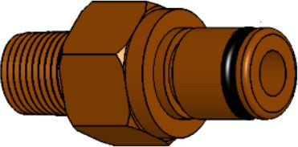
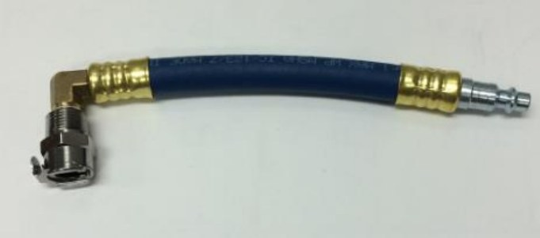

Doc no. MOC-TSB-17-10 // Vol. 17 No. 10 // Sep 20, 2017 // Transmission
Ford ATF Pressure Port Adapter
New9491594898
MOC has developed a new transmission adapter to be used on the Ford Mustangs with the 6R80 transmissions. This new adapter is Part No. 94915 and connects to the line pressure port. The tight space around the pressure port requires a short 90 degree adapter hose. The hose is available as Part No. 94898. This adapter will also fit any vehicle with a 5R55, 6R80 or 6R140 transmission.
What's new
This new adapter will replace the existing 94787 Ford Transmission Pressure Port adapter when current stock is depleted.
Contact
For more information, contact the Machine & Equipment Department at 866.244.6621.


Applications
| Vehicle |
|---|
| 2009–present Ford F-150 |
| 2009–present Ford Expedition |
| 2009–present Lincoln Navigator |
| 2011–2016 Ford Territory (SZ TCDi) |
| 2011-present Ford Mustang V6, GT, Ecoboost |
| 2011-present Ford Ranger 2.2L, 3.2L |
Part numbers
| Part No. | Description | Notes |
|---|---|---|
| 94915 | Adapter, ATF Pressure Port, 1/8" NPT Hose | |
| 94898 | Assy, Pressure Port, 90° ATF |